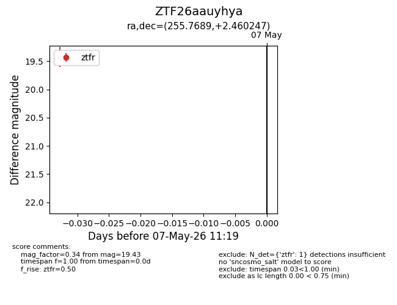
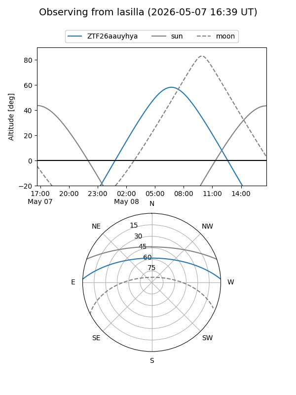
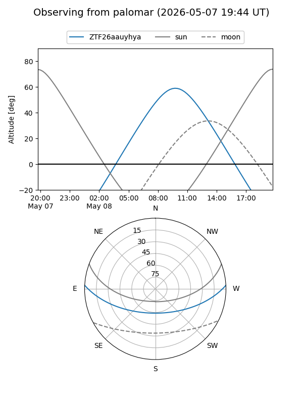

ZTF26aauyhya
Target ZTF26aauyhya at 2026-05-07 11:21
Aliases and brokers:
FINK: link
Lasair: link
ALeRCE: link
alt names
ZTF26aauyhya (ztf,fink_ztf)
Coordinates:
equatorial (ra, dec) = 255.7689,+2.46025
equatorial (HMS+DMS) = 17:03:04.54,+02:27:36.89
galactic (l, b) = (22.1578,+25.11897)
Flags:
Photometry:
last ztfr=19.43
1 ztfr detections
Lightcurve

Visibility


Additional plots